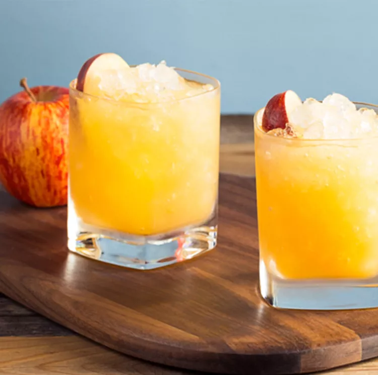

Back to home
Bourbon Cider Sour

Add a little fall flavor into a basic whiskey sour.
This bourbon apple cider takes smooth and smoky Jim Beam®
Bourbon and mixes it with the crisp and tart tang of cold
apple cider and orange juice. Whip it up in a flash and enjoy
alongside a delicious dinner.
Ingredients
- Two parts Jim Beam Bourbon
- 3 Parts cold Apple Cider
- 1 1/2 parts Orange Juice
- 3/4 part Simple Syrup
- Apple Slices
Steps
- Combine the bourbon, apple cider, orange juice, and simple syrup. Stir.
- Serve with an apple slice.